部署到Microsoft Azure Website Cloud¶
This step by step cookbook describes how to deploy a small Symfony web application to the Microsoft Azure Website cloud platform. It will explain how to setup a new Azure website including configuring the right PHP version and global environment variables. The document also shows how to you can leverage Git and Composer to deploy your Symfony application to the cloud.
Setting up the Azure Website¶
To setup a new Microsoft Azure Website, first signup with Azure or sign in with your credentials. Once you’re connected to your Azure Portal interface, scroll down to the bottom and select the New panel. On this panel, click Web Site and choose Custom Create:
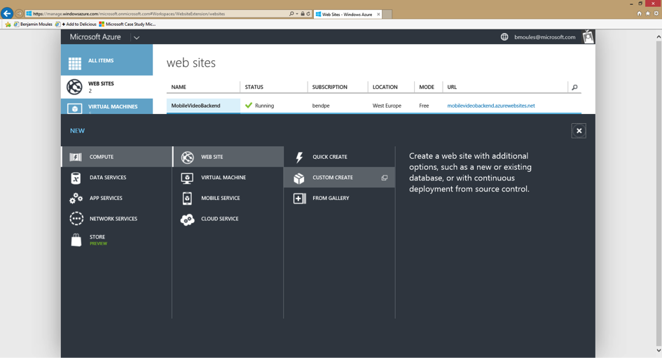Step 1: Create Web Site¶
Here, you will be prompted to fill in some basic information.
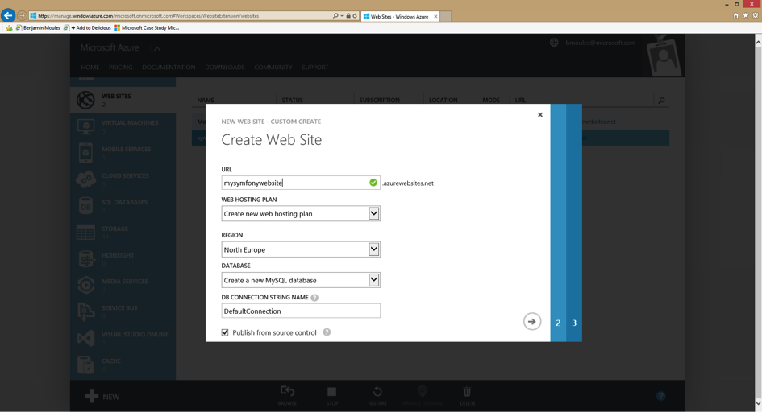For the URL, enter the URL that you would like to use for your Symfony application, then pick Create new web hosting plan in the region you want. By default, a free 20 MB SQL database is selected in the database dropdown list. In this tutorial, the Symfony app will connect to a MySQL database. Pick the Create a new MySQL database option in the dropdown list. You can keep the DefaultConnection string name. Finally, check the box Publish from source control to enable a Git repository and go to the next step.
Step 2: New MySQL Database¶
On this step, you will be prompted to setup your MySQL database storage with a database name and a region. The MySQL database storage is provided by Microsoft in partnership with ClearDB. Choose the same region you selected for the hosting plan configuration in the previous step.
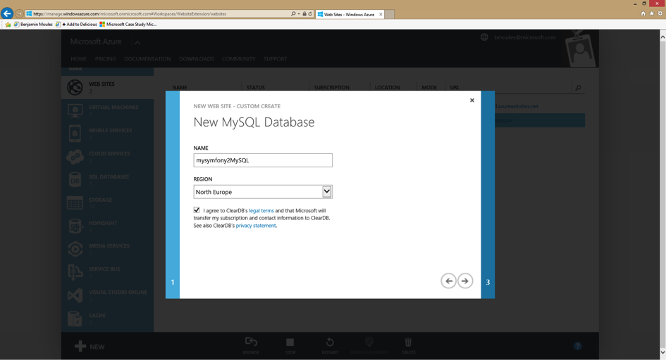Agree to the terms and conditions and click on the right arrow to continue.
Step 3: Where Is your Source Code¶
Now, on the third step, select a Local Git repository item and click on the right arrow to configure your Azure Website credentials.
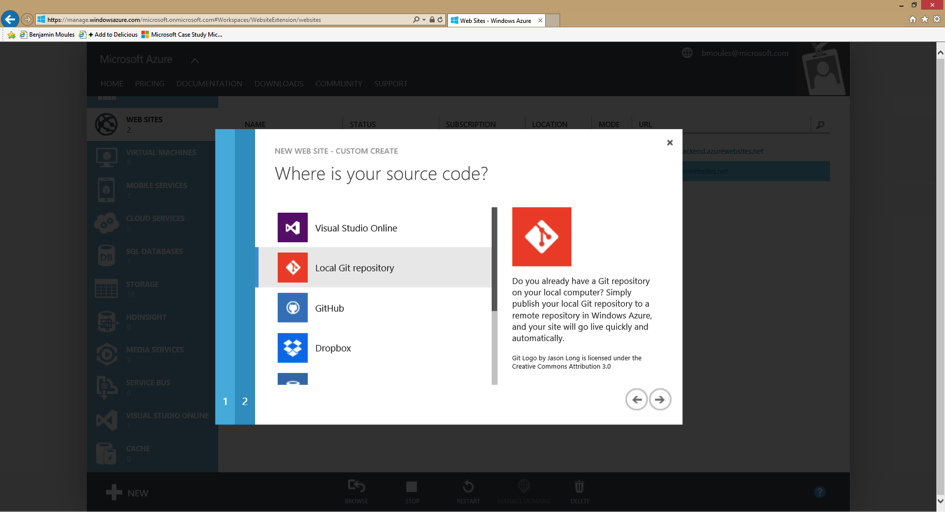Step 4: New Username and Password¶
Great! You’re now on the final step. Create a username and a secure password: these will become essential identifiers to connect to the FTP server and also to push your application code to the Git repository.
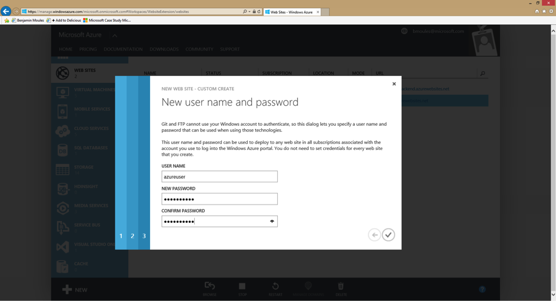Congratulations! Your Azure Website is now up and running. You can check it by browsing to the Website url you configured in the first step. You should see the following display in your web browser:
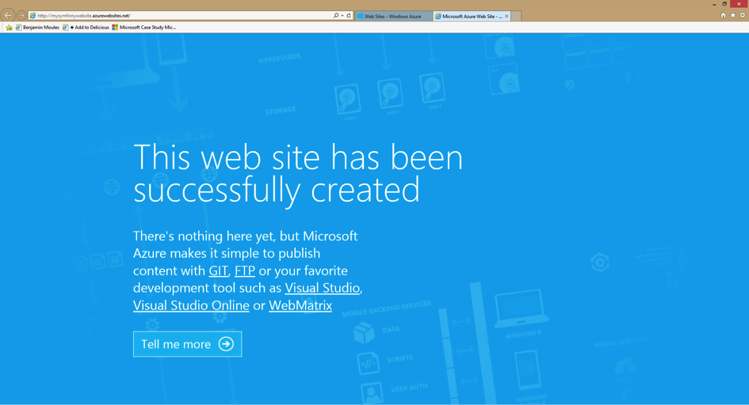The Microsoft Azure portal also provides a complete control panel for the Azure Website.
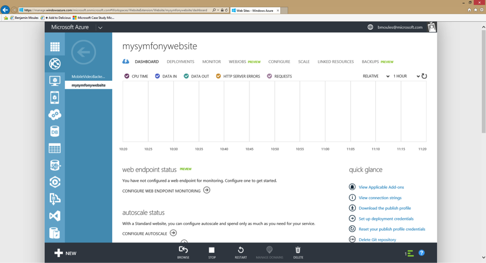Your Azure Website is ready! But to run a Symfony site, you need to configure just a few additional things.
Configuring the Azure Website for Symfony¶
This section of the tutorial details how to configure the correct version of PHP to run Symfony. It also shows you how to enable some mandatory PHP extensions and how to properly configure PHP for a production environment.
Configuring the latest PHP Runtime¶
Even though Symfony only requires PHP 5.3.3 to run, it’s always recommended to use the most recent PHP version whenever possible. PHP 5.3 is no longer supported by the PHP core team, but you can update it easily in Azure.
To update your PHP version on Azure, go to the Configure tab of the control panel and select the version you want.
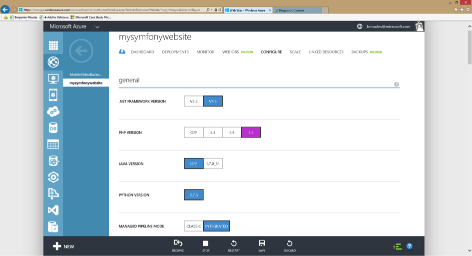Click the Save button in the bottom bar to save your changes and restart the web server.
注解
Choosing a more recent PHP version can greatly improve runtime performance. PHP 5.5 ships with a new built-in PHP accelerator called OPCache that replaces APC. On an Azure Website, OPCache is already enabled and there is no need to install and setup APC.
The following screenshot shows the output of a phpinfo script
run from an Azure Website to verify that PHP 5.5 is running with
OPCache enabled.
Tweaking php.ini Configuration Settings¶
Microsoft Azure allows you to override the php.ini global configuration
settings by creating a custom .user.ini file under the project root
directory (site/wwwroot).
; .user.ini
expose_php = Off
memory_limit = 256M
upload_max_filesize = 10M
None of these settings needs to be overridden. The default PHP configuration
is already pretty good, so this is just an example to show how you can easily
tweak PHP internal settings by uploading your custom .ini file.
You can either manually create this file on your Azure Website FTP server under
the site/wwwroot directory or deploy it with Git. You can get your FTP
server credentials from the Azure Website Control panel under the Dashboard
tab on the right sidebar. If you want to use Git, simply put your .user.ini
file at the root of your local repository and push your commits to your Azure
Website repository.
注解
This cookbook has a section dedicated to explaining how to configure your Azure Website Git repository and how to push the commits to be deployed. See Deploying from Git. You can also learn more about configuring PHP internal settings on the official PHP MSDN documentation page.
Enabling the PHP intl Extension¶
This is the tricky part of the guide! At the time of writing this cookbook,
Microsoft Azure Website provided the intl extension, but it’s not enabled
by default. To enable the intl extension, there is no need to upload
any DLL files as the php_intl.dll file already exists on Azure. In fact,
this file just needs to be moved into the custom website extension directory.
注解
The Microsoft Azure team is currently working on enabling the intl PHP
extension by default. In the near future, the following steps will no
longer be necessary.
To get the php_intl.dll file under your site/wwwroot directory, simply
access the online Kudu tool by browsing to the following url:
https://[your-website-name].scm.azurewebsites.net
Kudu is a set of tools to manage your application. It comes with a file explorer, a command line prompt, a log stream and a configuration settings summary page. Of course, this section can only be accessed if you’re logged in to your main Azure Website account.
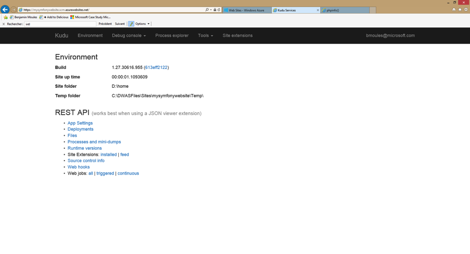From the Kudu front page, click on the Debug Console navigation item in the main menu and choose CMD. This should open the Debug Console page that shows a file explorer and a console prompt below.
In the console prompt, type the following three commands to copy the original
php_intl.dll extension file into a custom website ext/ directory. This
new directory must be created under the main directory site/wwwroot.
$ cd site\wwwroot
$ mkdir ext
$ copy "D:\Program Files (x86)\PHP\v5.5\ext\php_intl.dll" ext
The whole process and output should look like this:
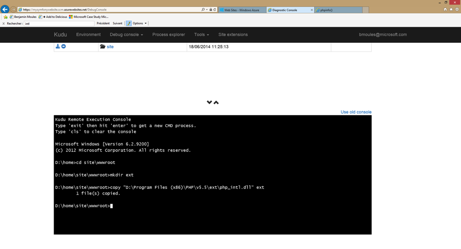To complete the activation of the php_intl.dll extension, you must tell
Azure Website to load it from the newly created ext directory. This can be
done by registering a global PHP_EXTENSIONS environment variable from
the Configure tab of the main Azure Website Control panel.
In the app settings section, register the PHP_EXTENSIONS environment
variable with the value ext\php_intl.dll as shown in the screenshot below:
Hit “save” to confirm your changes and restart the web server. The PHP Intl
extension should now be available in your web server environment. The following
screenshot of a phpinfo page verifies the intl extension is
properly enabled:
Great! The PHP environment setup is now complete. Next, you’ll learn how to configure the Git repository and push code to production. You’ll also learn how to install and configure the Symfony app after it’s deployed.
Deploying from Git¶
First, make sure Git is correctly installed on your local machine using the following command in your terminal:
$ git --version
注解
Get your Git from the git-scm.com website and follow the instructions to install and configure it on your local machine.
In the Azure Website Control panel, browse the Deployment tab to get the Git repository URL where you should push your code:
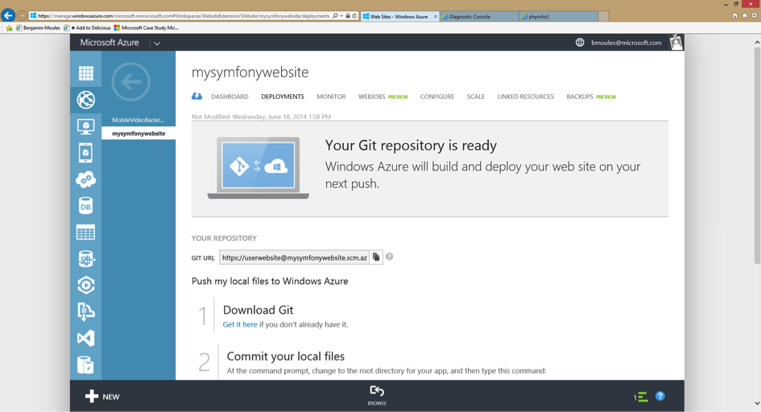Now, you’ll want to connect your local Symfony application with this remote
Git repository on Azure Website. If your Symfony application is not yet stored
with Git, you must first create a Git repository in your Symfony application
directory with the git init command and commit to it with the git commit
command.
Also, make sure your Symfony repository has a .gitignore file at its root
directory with at least the following contents:
/app/bootstrap.php.cache
/app/cache/*
/app/config/parameters.yml
/app/logs/*
!app/cache/.gitkeep
!app/logs/.gitkeep
/app/SymfonyRequirements.php
/build/
/vendor/
/bin/
/composer.phar
/web/app_dev.php
/web/bundles/
/web/config.php
The .gitignore file asks Git not to track any of the files and directories
that match these patterns. This means these files won’t be deployed to the Azure
Website.
Now, from the command line on your local machine, type the following at the root of your Symfony project:
$ git remote add azure https://<username>@<your-website-name>.scm.azurewebsites.net:443/<your-website-name>.git
$ git push azure master
Don’t forget to replace the values enclosed by < and > with your custom
settings displayed in the Deployment tab of your Azure Website panel. The
git remote command connects the Azure Website remote Git repository and
assigns an alias to it with the name azure. The second git push command
pushes all your commits to the remote master branch of your remote azure
Git repository.
The deployment with Git should produce an output similar to the screenshot below:
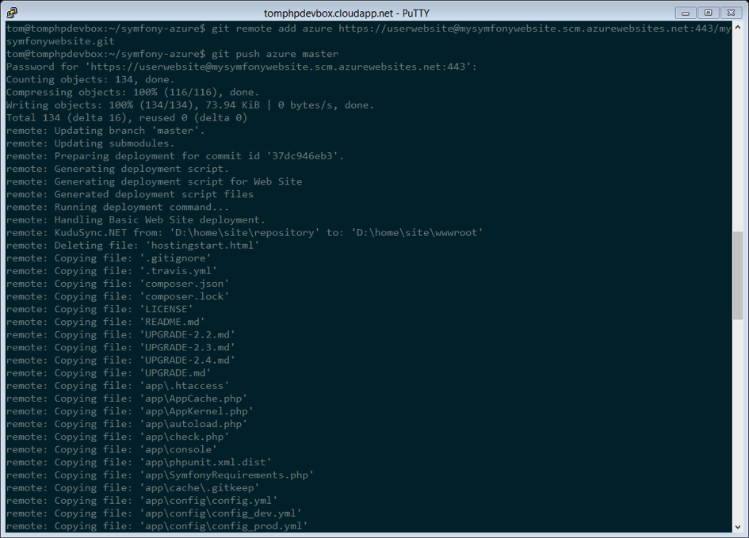The code of the Symfony application has now been deployed to the Azure Website
which you can browse from the file explorer of the Kudu application. You should
see the app/, src/ and web/ directories under your site/wwwroot
directory on the Azure Website filesystem.
Configure the Symfony Application¶
PHP has been configured and your code has been pushed with Git. The last step is to configure the application and install the third party dependencies it requires that aren’t tracked by Git. Switch back to the online Console of the Kudu application and execute the following commands in it:
$ cd site\wwwroot
$ curl -sS https://getcomposer.org/installer | php
$ php -d extension=php_intl.dll composer.phar install
The curl command retrieves and downloads the Composer command line tool and
installs it at the root of the site/wwwroot directory. Then, running
the Composer install command downloads and installs all necessary third-party
libraries.
This may take a while depending on the number of third-party dependencies
you’ve configured in your composer.json file.
注解
The -d switch allows you to quickly override/add any php.ini settings.
In this command, we are forcing PHP to use the intl extension, because
it is not enabled by default in Azure Website at the moment. Soon, this
-d option will no longer be needed since Microsoft will enable the
intl extension by default.
At the end of the composer install command, you will be prompted to fill in
the values of some Symfony settings like database credentials, locale, mailer
credentials, CSRF token protection, etc. These parameters come from the
app/config/parameters.yml.dist file.
The most important thing in this cookbook is to correctly setup your database settings. You can get your MySQL database settings on the right sidebar of the Azure Website Dashboard panel. Simply click on the View Connection Strings link to make them appear in a pop-in.
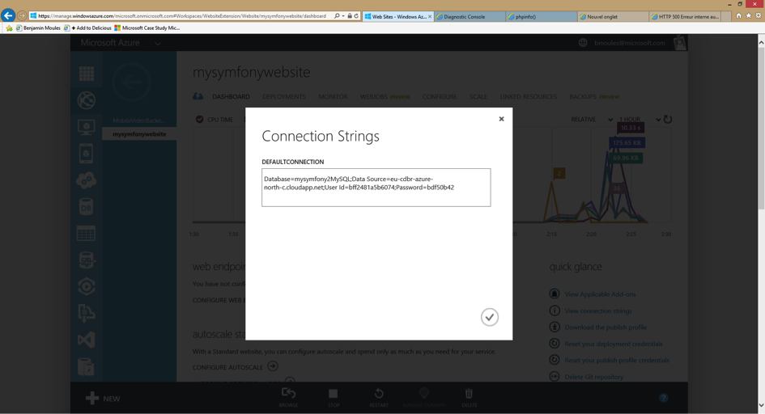The displayed MySQL database settings should be something similar to the code below. Of course, each value depends on what you’ve already configured.
Database=mysymfonyMySQL;Data Source=eu-cdbr-azure-north-c.cloudapp.net;User Id=bff2481a5b6074;Password=bdf50b42
Switch back to the console and answer the prompted questions and provide the following answers. Don’t forget to adapt the values below with your real values from the MySQL connection string.
database_driver: pdo_mysql
database_host: u-cdbr-azure-north-c.cloudapp.net
database_port: null
database_name: mysymfonyMySQL
database_user: bff2481a5b6074
database_password: bdf50b42
// ...
Don’t forget to answer all the questions. It’s important to set a unique random
string for the secret variable. For the mailer configuration, Azure Website
doesn’t provide a built-in mailer service. You should consider configuring
the host-name and credentials of some other third-party mailing service if
your application needs to send emails.
Your Symfony application is now configured and should be almost operational. The final step is to build the database schema. This can easily be done with the command line interface if you’re using Doctrine. In the online Console tool of the Kudu application, run the following command to mount the tables into your MySQL database.
$ php app/console doctrine:schema:update --force
This command builds the tables and indexes for your MySQL database. If your Symfony application is more complex than a basic Symfony Standard Edition, you may have additional commands to execute for setup (see 如何部署Symfony应用).
Make sure that your application is running by browsing the app.php front
controller with your web browser and the following url:
http://<your-website-name>.azurewebsites.net/web/app.php
If Symfony is correctly installed, you should see the front page of your Symfony application showing.
Configure the Web Server¶
At this point, the Symfony application has been deployed and works perfectly on
the Azure Website. However, the web folder is still part of the url, which
you definitely don’t want. But don’t worry! You can easily configure the web
server to point to the web folder and remove the web in the URL (and
guarantee that nobody can access files outside of the web directory.)
To do this, create and deploy (see previous section about Git) the following
web.config file. This file must be located at the root of your project
next to the composer.json file. This file is the Microsoft IIS Server
equivalent to the well-known .htaccess file from Apache. For a Symfony
application, configure it with the following content:
<!-- web.config -->
<?xml version="1.0" encoding="UTF-8"?>
<configuration>
<system.webServer>
<rewrite>
<rules>
<clear />
<rule name="BlockAccessToPublic" patternSyntax="Wildcard" stopProcessing="true">
<match url="*" />
<conditions logicalGrouping="MatchAll" trackAllCaptures="false">
<add input="{URL}" pattern="/web/*" />
</conditions>
<action type="CustomResponse" statusCode="403" statusReason="Forbidden: Access is denied." statusDescription="You do not have permission to view this directory or page using the credentials that you supplied." />
</rule>
<rule name="RewriteAssetsToPublic" stopProcessing="true">
<match url="^(.*)(\.css|\.js|\.jpg|\.png|\.gif)$" />
<conditions logicalGrouping="MatchAll" trackAllCaptures="false">
</conditions>
<action type="Rewrite" url="web/{R:0}" />
</rule>
<rule name="RewriteRequestsToPublic" stopProcessing="true">
<match url="^(.*)$" />
<conditions logicalGrouping="MatchAll" trackAllCaptures="false">
</conditions>
<action type="Rewrite" url="web/app.php/{R:0}" />
</rule>
</rules>
</rewrite>
</system.webServer>
</configuration>
As you can see, the latest rule RewriteRequestsToPublic is responsible for
rewriting any urls to the web/app.php front controller which allows you to
skip the web/ folder in the URL. The first rule called BlockAccessToPublic
matches all url patterns that contain the web/ folder and serves a
403 Forbidden HTTP response instead. This example is based on Benjamin
Eberlei’s sample you can find on GitHub in the SymfonyAzureEdition bundle.
Deploy this file under the site/wwwroot directory of the Azure Website and
browse to your application without the web/app.php segment in the URL.
Conclusion¶
Nice work! You’ve now deployed your Symfony application to the Microsoft Azure Website Cloud platform. You also saw that Symfony can be easily configured and executed on a Microsoft IIS web server. The process is simple and easy to implement. And as a bonus, Microsoft is continuing to reduce the number of steps needed so that deployment becomes even easier.